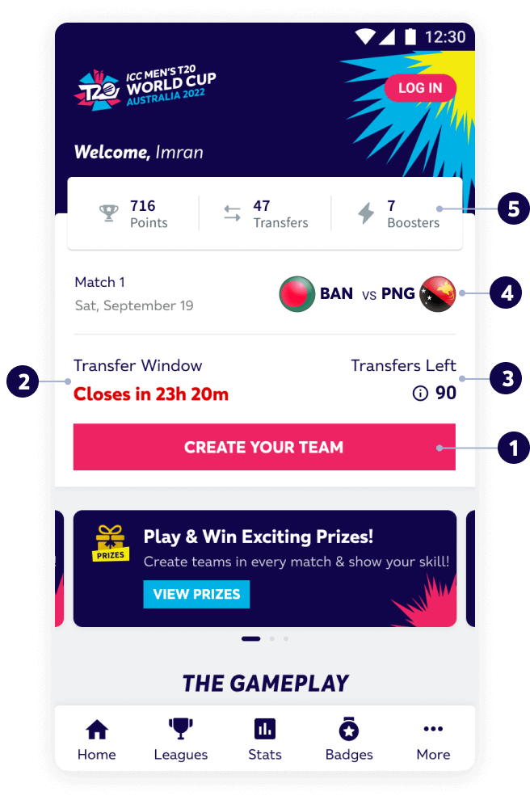
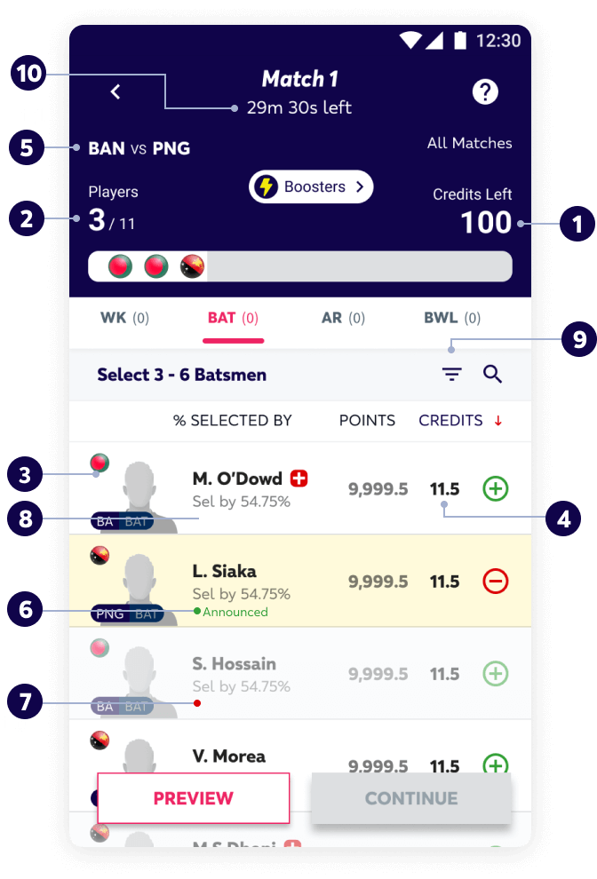
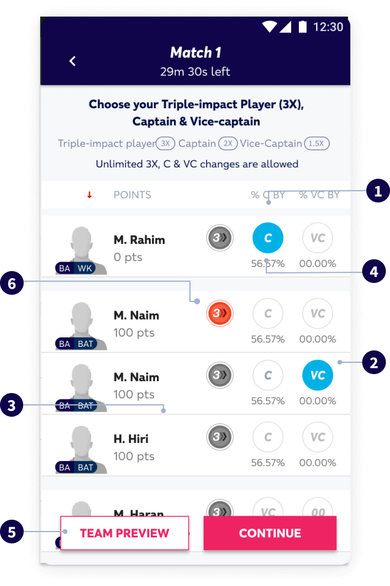
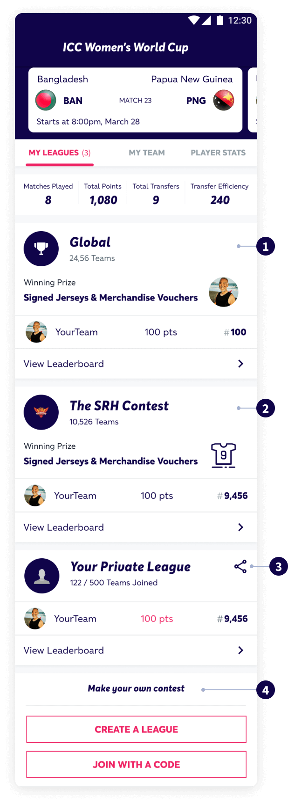
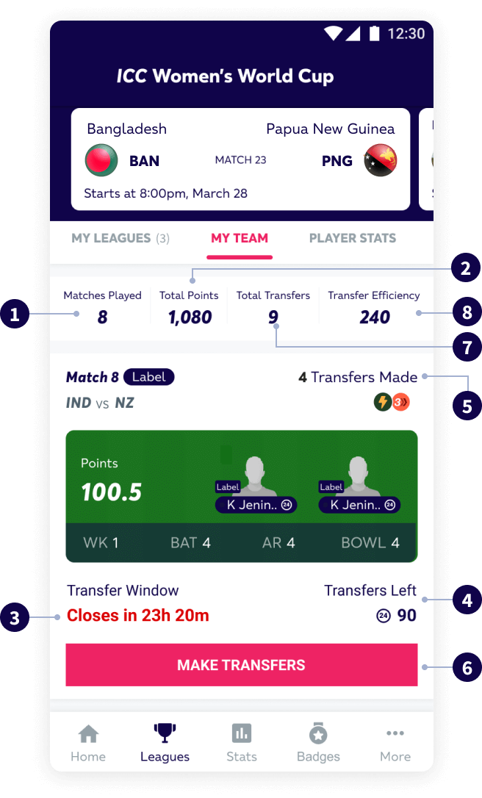
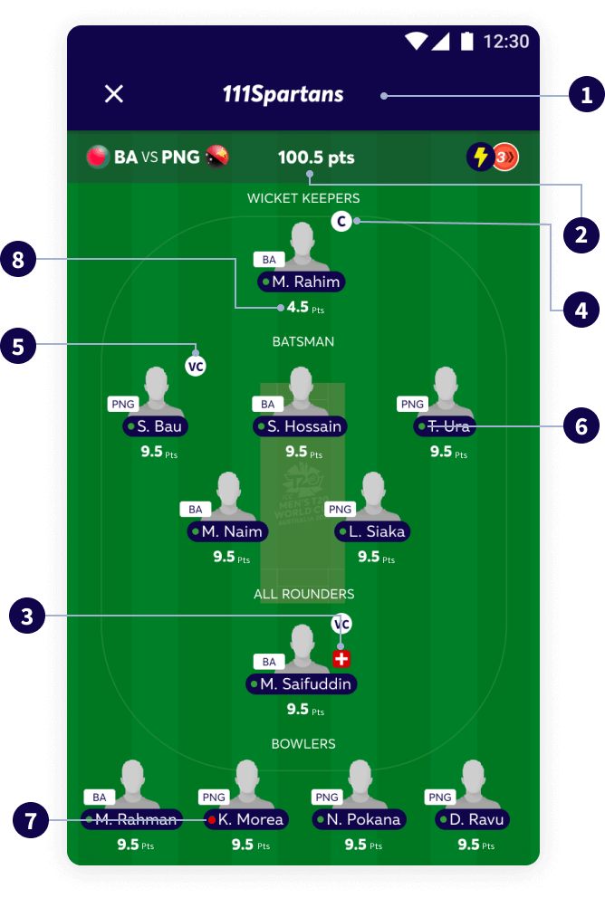
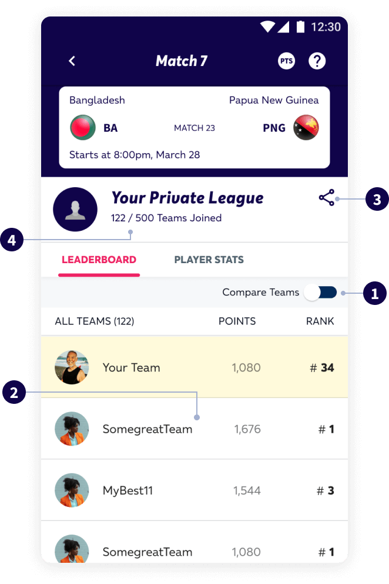
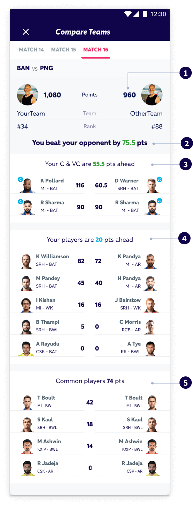
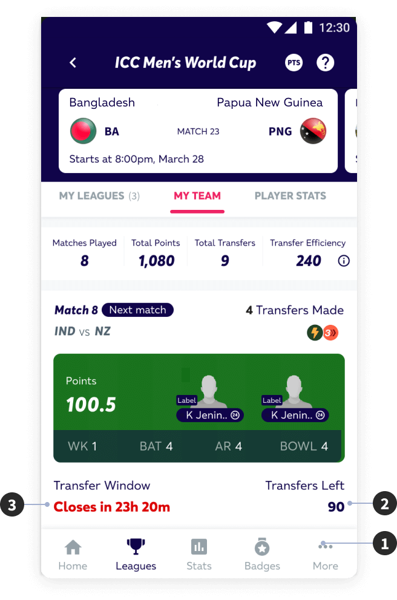
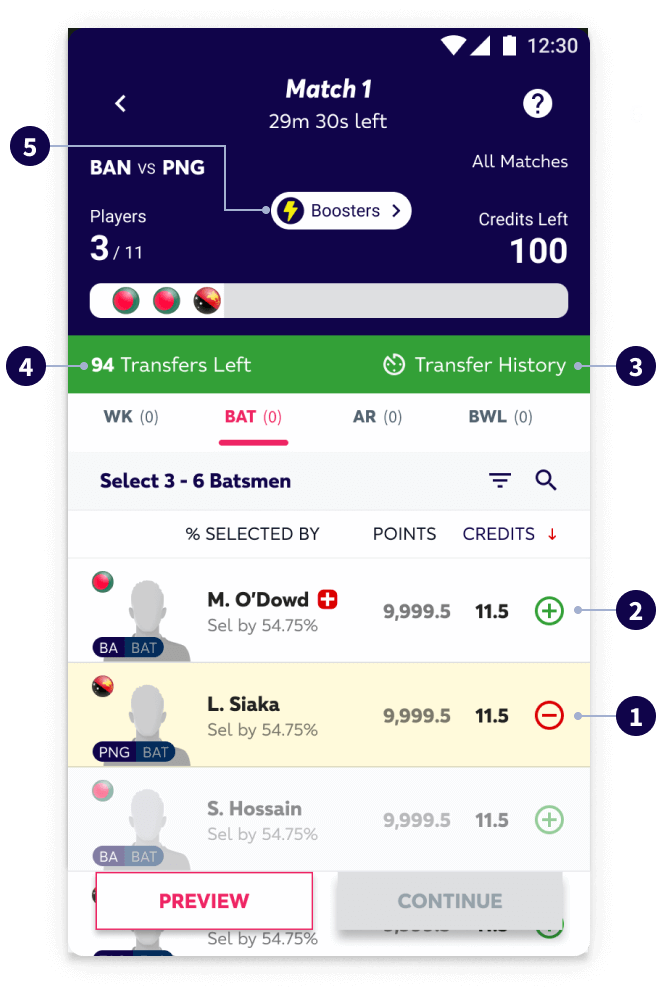

- Tap on ‘Create Team’ to start creating your team
- Keep an eye on the deadline for the upcoming match
- You can make transfers for every match of the IPL. Tap the ‘i’ button for more details
- Details of the upcoming match

- These are the credits you have remaining
- These are the number of players you have picked so far
- These are the number of overseas players in your team (max. 4)
- Tap on a player’s image to view full stats
- This is the cost of the player (in credits)
- List of upcoming matches (most recent first)
- A green dot indicates that the player is in the playing 11 for the upcoming match (updated
after toss)
- A red dot indicates that the player is NOT in the playing 11 for the upcoming match (updated
after toss)
- No dot indicates that the player’s team is not playing in the upcoming match (updated after
toss)
- You can filter players by credits, team, nationality and matches. You can also search for
particular players by name.
- The deadline for the upcoming match
Points to Remember
- Keep an eye on player credits to ensure you pick the best team within 100 credits
- You have to pick players from each player type. You can pick 1 to 4 wicket keepers, 3 to 6
batsmen, 1 to 4 all-rounders and 3 to 6 bowlers
- Keep an eye on the schedule and pick players based on upcoming matches for maximum points
- Running short of credits? Use the filter options to find players that fit in your budget

- Your current captain
- Your current vice-captain
- Keep an eye out on player status and availability
- This is the percentage of teams that have picked a particular player as a captain of
vice-captain
- Tap here to view your full team
Points to Remember
- Your captain and vice-captain are the most important players in your team. So make your
decision carefully!
- Use the ‘% selected by’ tab to pick a captain you think can help you score more points than
the opposition
- You can change your captain and vice-captain as many times as you want before the match
deadline

- You will auto-join the Global League after you save your team for the 1st time
- You will auto-join your favourite team’s League after you save your team for the 1st time
- Tap here to share and invite your friends to any Private League you’ve created or joined
- You can view any Private Leagues you have created or joined
- Tap here to create your own Private League
- Tap here to join a Private League using an invite code
Points to Remember
- You can join multiple leagues to compete with other IPL fans and earn bragging rights. You
will get prizes only in the Global League.
- You can create/join as many Private Leagues as you want and compete with friends

- Total number of matchdays you’ve played
- Total number of points scored by your team
- Deadline for the upcoming matchday
- Number of remaining transfers
- Number of transfers made for each matchday
- Tap here to make transfers for the upcoming matchday
Points to Remember
- Tap here to make transfers for the upcoming matchday

- Tap on any matchday to view your team for that particular day
- Total number of points scored by your team on the matchday
- The ‘’ indicates that this player is
injured/unavailable
- Your team’s captain
- Your team’s vice-captain
- A green dot indicates that this player is playing on the current/upcoming matchday
- A red dot indicates that this player is not playing on the current/upcoming matchday
- No dot indicates that this player’s team is not playing the current/upcoming matchday
- The ‘’ indicates that the player is an overseas player
- Points scored by the player on the current matchday
Points to Remember
- Keep an eye out for injured/unavailable players
- Make sure your captain and vice-captain are playing on the matchday

- Tap to compare your team with any other team in the league
- Tap here to view a particular team
- Tap here to share and invite people to this league
- This is the total number of people who have joined this league
Points to Remember
- There may be a slight delay in updating points
- You can compare teams only after the match starts

- Total points scored by both teams on the matchday
- Point difference between both teams
- Point difference between both teams’ captain and vice-captain
- Point difference between other players of both teams
- Common players in both teams

- Tap here to make transfers for the upcoming matchday
- Number of transfers left
- Deadline to make transfers for the upcoming matchday
Points to Remember
- You can make transfers from both the homepage and the ‘My Teams’ page
- You have a total of 110 transfers (100 for group stage + 10 for the last 4 matches) for the
tournament. Keep an eye on the number of transfers you have left
- You can make unlimited transfers for the 1st matchday you play and after the end of the
group
stage
- Make sure you make your transfers for the upcoming matchday before the deadline

- Tap on the ‘-’ button to remove a player from your team
- Tap on the ‘+’ button to add a player in your team
- Tap here to view your complete transfer history
- Tap here to reset your transfers for the upcoming matchday
Points to Remember
- Your transfers for a particular matchday will be reversed if the match is delayed/abandoned
for any reason
- You must follow the rules of creating a team while making transfers (max. number of overseas
players, batsmen, bowlers, etc.)